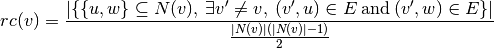
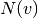

node_redundancy¶
- node_redundancy(G, nodes=None)[source]¶
Compute bipartite node redundancy coefficient.
The redundancy coefficient of a node
 is the fraction of pairs of
neighbors of that are both linked to other nodes. In a one-mode
projection these nodes would be linked together even if were
not there.
is the fraction of pairs of
neighbors of that are both linked to other nodes. In a one-mode
projection these nodes would be linked together even if were
not there.
where  are the neighbors of
in  .
.Parameters : G : graph
A bipartite graph
nodes : list or iterable (optional)
Compute redundancy for these nodes. The default is all nodes in G.
Returns : redundancy : dictionary
A dictionary keyed by node with the node redundancy value.
References
[R153] Latapy, Matthieu, Clémence Magnien, and Nathalie Del Vecchio (2008). Basic notions for the analysis of large two-mode networks. Social Networks 30(1), 31–48. Examples
>>> from networkx.algorithms import bipartite >>> G = nx.cycle_graph(4) >>> rc = bipartite.node_redundancy(G) >>> rc[0] 1.0
Compute the average redundancy for the graph:
>>> sum(rc.values())/len(G) 1.0
Compute the average redundancy for a set of nodes:
>>> nodes = [0, 2] >>> sum(rc[n] for n in nodes)/len(nodes) 1.0